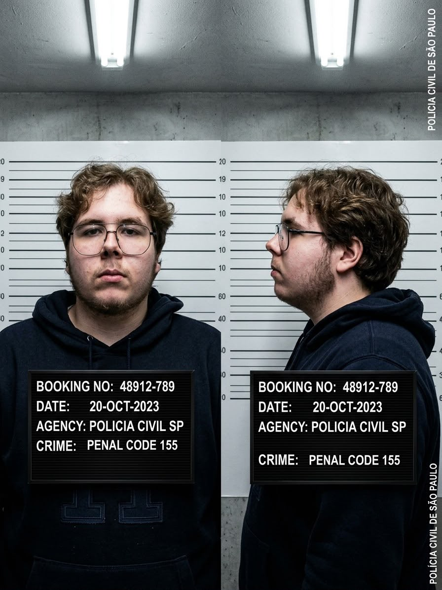

ARQUIVO #06
CONFIDENCIAL
DOCUMENTO 06
Ficha do Indivíduo

FOTO DO INDIVÍDUO
Nome:
João Otavio Silveira
Codinomes:
Jão Grandão/Cazé/Bolovo
Idade:
18 anos
Cidade:
Bom Retiro - SC
Status:
EM INVESTIGAÇÃO
Observação do investigador:
Indivíduo atualmente matriculado no curso de
Sistemas de Informação. Informações adicionais
podem ser encontradas nos documentos seguintes.
PODE ESTAR ENVOLVIDO COM O TERRORISTA MARCELO VALLE SILVEIRA MELO.